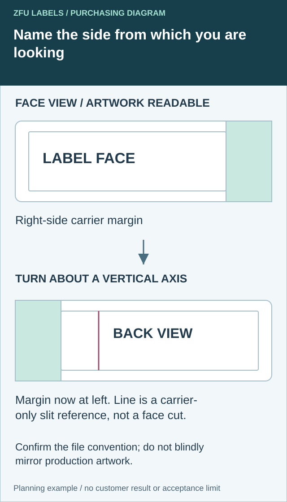

A note saying put the liner slit on the left is incomplete without the viewing side. Approve the readable label-face view and the carrier-back view together before the converter prepares a manual-peeling feature.
Review the release-liner handling feature as part of the supply format. Ask whether an oversized liner margin, a supported split-back arrangement or another supplier-designed feature suits the actual task. Keep handling assistance separate from the consumer's opening or peel function.

Put the viewing convention on the handling drawing
Show the printed face in a readable orientation and identify the carrier boundary separately from the finished label boundary. If a margin or back slit is proposed, label the layer on which it exists. A carrier-handling feature must not silently become a cut through the retail label.


Prepare a second view explicitly labelled as looking at the carrier back. State how the piece is turned. In the diagram's simple vertical-axis turn, a margin on the right of the face view appears on the left in the physical back view. A top-to-bottom turn would create a different presentation; an unlabeled second rectangle leaves the interpretation open.
This is a physical-view explanation, not an instruction to mirror the production file. A converter may define its manufacturing artwork in a front-view coordinate system even when the operation affects the back. Ask for that convention and obtain a marked confirmation. Do not automatically reverse text, artwork or a tooling file from this diagram.
| Drawing item | Face-side reference | Back-side confirmation |
|---|---|---|
| Orientation | Readable artwork and named top | Turning direction and named top after turning |
| Finished label | Actual cut boundary | Same physical piece identified, not a second design |
| Carrier | Margin and outside boundary | Corresponding margin with the view stated |
| Handling feature | Location referenced to known edges | Actual affected layer and proposed slit/feature |
| Production convention | Review drawing identity | Converter's file convention and approval reference |
Avery's backing-slit help page describes a particular range's changed slit arrangement. It demonstrates why a supplied liner feature needs an actual layout reference; it does not establish that every custom format has that slit or that this supplier offers it.
Use a marked physical mockup to communicate the views if helpful, keeping its limitations visible. A hand-drawn or hand-cut demonstration does not establish production feasibility, repeatability or safe operation. The converter must confirm the proposed arrangement on the quoted face/adhesive/liner construction.
Once the view is agreed, perform the manual-peeling task review below under the real handling conditions. Confirm that the correct feature assists the operator without changing the intended retail shape. Retain the view convention with the order so a later artwork rotation or format change cannot silently reverse its meaning.
Observe the manual application task
Identify how the operator removes the label, holds it, aligns it and presses it onto the pack. Include the working posture and any gloves required by the real process. Do not assume that a sample easy to peel with bare hands represents a chilled packing bench using gloves.
Record label dimensions, stiffness and the proposed liner. Very small labels and large flexible labels may create different handling problems. Ask the converter to propose a supported arrangement rather than prescribe a feature from an unrelated sticker product.
The roll-or-sheet comparison addresses the work between opening the pack and applying the label. The narrower decision here is whether the supplied liner lets the operator start and control that work reliably.
Distinguish the available features
An oversized liner can provide an area to hold while separating the label. A split-back arrangement can offer another way to begin removal. A dispenser may present part of a roll label for picking. Each option changes the handling sequence and may have construction or equipment limits.
Ask the supplier to show the actual proposal, including which part remains on the liner and what the operator touches. Do not call every liner margin a consumer pull tab. A label intended to open a pack has a different physical and approval function.
Likewise, a slit in the release liner is not the same as a cut through the printed face. Keep the drawing clear so a handling feature does not accidentally become a visible or functional cut in the label itself.
Use a manual-peeling review sheet
| Field | What to review |
|---|---|
| Application task | Package, position and operator sequence |
| Supply format | Sheet, roll, individual piece or dispenser proposal |
| Handling feature | Actual liner margin, split or presentation drawing |
| Contact | Where hands or gloves touch during separation |
| Label integrity | Creasing, stretching or unintended damage observations |
| Placement | Whether the operator can align the label before firm contact |
| Waste handling | Safe and practical liner collection at the bench |
| Approval boundary | Construction and task represented by the sample |
The sheet is an editorial task review. It does not establish a production speed or hygiene approval. Involve the packer's quality and operations owners where the process has specific handling requirements.
Compare features using the actual operator conditions
Use representative labels and packages. Ask the operator to follow the intended process, including gloves and normal tools where applicable. Record what makes separation difficult rather than summarize the trial only as easy or hard.
A hypothetical syrup operation may find that a liner margin helps with a small rectangular label, while a large flexible label benefits from another supported presentation method. Those are possibilities to evaluate, not a rule that one feature is always superior.
If the sample uses a different face or liner from the quoted order, identify that difference. A hand-cut mockup can explain the idea without proving that the converter can supply the proposed feature consistently.
Keep the cut and handling drawings connected
Show the finished label boundary, liner boundary and any intended split or handling area separately. Confirm dimensions and orientation with the converter. The die-cut guide helps prevent confusion between the printed border and the physical cut.
Ask how the feature affects packing, minimum quantities and the usable count. An enlarged liner or individually finished format may have different commercial conditions from standard rolls. Use the actual offer rather than assume that handling features add no cost or always require expensive tooling.
Do not add a decorative projecting label tab solely to make removal from the liner easier unless its effect on the applied pack has been reviewed. The consumer-facing shape and the temporary carrier can solve different jobs.
Consider a dispenser before redesigning the label
For repeated manual work, a supported dispenser may help present the label without changing the retail shape. Compare the equipment, roll requirements, bench space and operator method with the proposed liner feature.
The applicator selection guide addresses the larger equipment decision. A manual peeling aid should not be judged as a substitute for every application system, nor should an equipment purchase be assumed necessary for a small trial.
Where a dispenser is proposed, test the actual construction and roll format. A feature intended for individual hand separation may not suit the dispenser path. Keep the selected method and its limitations in the order specification.
Release the supported handling arrangement
Record the final drawing, construction, sample and authorized task. Check the first delivery against that arrangement. If the supplier later changes the liner or finishing method, ask whether the approved handling observation still applies.
Resolve the specific label handoff
Include readable face view, explicitly labelled carrier-back view, finished dimensions, proposed liner handling feature and converter file convention.
Prepare the label specification inquiry. The contact page opens an email draft for review; send files through the listed email or WhatsApp route. Actual supply scope, samples, pricing and timing require project confirmation.
Related decisions: Custom Die-Cut Labels: Separate the Cut Path from the Brand Border; Roll or Sheet Labels: Compare the Work Between Opening the Pack and Finishing the Job; Hand Labeling or an Applicator? Check the Whole Packing Flow